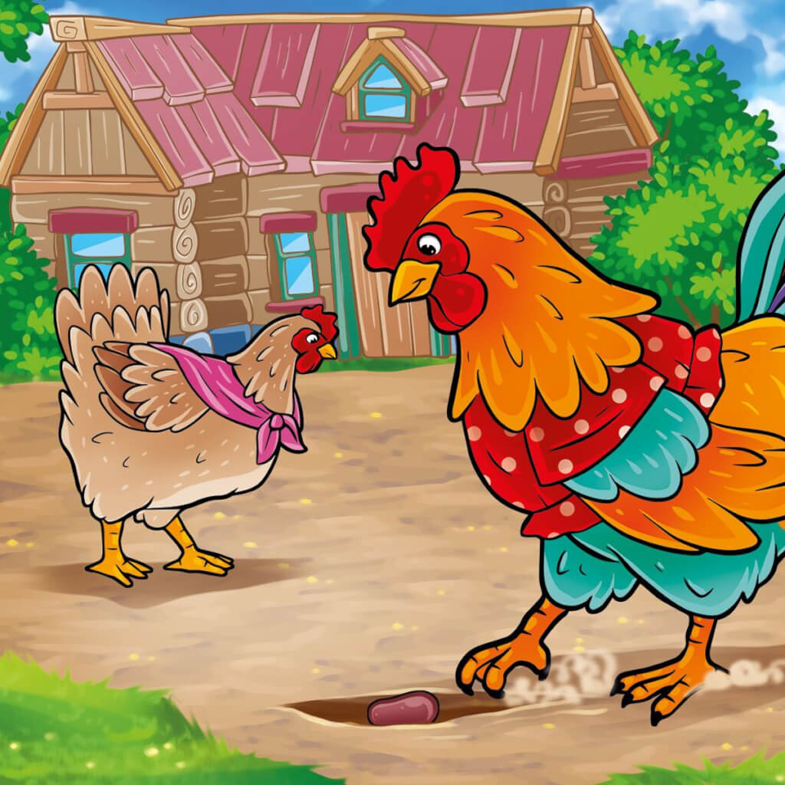

Жили-были петушок и курочка.
Петушок все торопился, да торопился, а курочка знай себе да приговаривает:
— Петя, не торопись. Петя, не торопись.
Петушок и Курочка
Клевал как-то петушок бобовые зернышки, да второпях и подавился. Подавился, не дышит, не слышит, лежит не шевелится.
Перепугалась курочка, бросилась к хозяйке, кричит:
— Ох, хозяюшка, дай скорей маслица петушку горлышко смазать: подавился петушок бобовым зернышком.
Хозяйка говорит:
Хозяйка и Курочка
— Беги скорей к коровушке, проси у нее молока, а я уж собью маслица.
Бросилась курочка к корове:
— Коровушка, голубушка, дай скорее молока, из молока хозяюшка собьет маслица, маслицем смажу петушку горлышко: подавился петушок бобовым зернышком.
Курочка и корова
— Ступай скорее к хозяину, пусть он принесет мне свежей травы.
Бежит курочка к хозяину:
— Хозяин! Хозяин! Дай скорее коровушке свежей травы, коровушка даст молочка, из молочка хозяюшка собьет маслица, маслицем я смажу петушку горлышко:
подавился петушок бобовым зернышком.
— Беги скорей к кузнецу за косой, — говорит хозяин.
Со всех ног бросилась курочка к кузнецу:
— Кузнец, кузнец, дай скорее хозяину хорошую косу.
Хозяин даст коровушке травы, коровушка даст молока, хозяюшка даст мне маслица, я смажу петушку горлышко:
подавился петушок бобовым зернышком.
Кузнец дал хозяину новую косу, хозяин дал коровушке свежей травы, коровушка дала молока, хозяюшка сбила масла, дала маслица курочке.
Смазала курочка петушку горлышко. Бобовое зернышко и проскочило.
Довольные петушок и курочка
Петушок вскочил живехонький и во все горло запел:
— Ку-ка-реку!